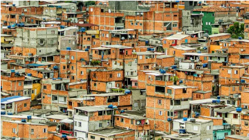
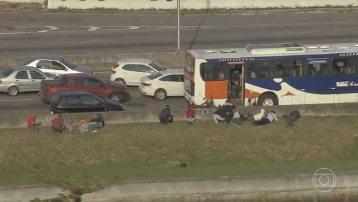
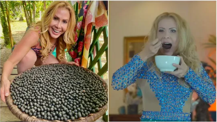
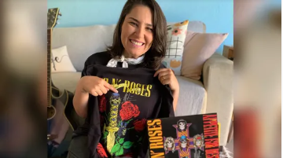
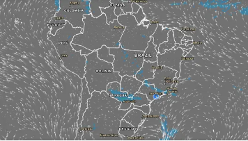
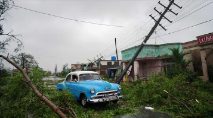

Cônsul alemão preso suspeito de matar o marido tem pedido de liberdade negado
Anitta fala sobre vontade de participar do 'BBB': 'Se deixar, eu tô na edição que vem'
Polícia prende filha suspeita de roubar R$ 700 milhões da própria mãe
Eleições TSE nega recurso, e Bolsonaro diz que decisão que proibiu live no Alvorada foi parcial
Ex-presidente da Vila Isabel, Wilson Vieira Alves, o Moisés, é morto a tiros
prisão de golpista que cometia estelionato sentimental
Projeções apontam vitória da direita radical na Itália, e Giorgia Meloni pode ser premiê
Revolução da longevidade: novo campo na medicina se concentra em descobrir como adiar velhice
confusão entre Guilherme Boulos e militante adolescente do MBL


Tumulto no Recife
VÍDEO: clientes de bar confundem corrida de crossfit com arrastão

Homem é preso por importunação sexual dentro de ônibus na Zona Sul de SP
Suspeito atacou duas mulheres na manhã desta quinta-feira (25). Em 2015, ele já tinha sido preso por abuso sexual dentro de vagão do Metrô.

Nova decisão suspende prisão domiciliar de Isaías do Borel
Suspensão ainda será julgado pelos demais desembargadores da 3ª Câmara Criminal do Tribunal de Justiça do Rio.


Monitor da Violência: Bahia registra maior quantidade de mortes violentas no primeiro semestre no Brasil
Nos seis primeiros meses deste ano, foram registradas 2.630 mortes violentas, contra 2.931 no primeiro semestre de 2021

Série com presidenciáveis
Jornal Nacional entrevista Lula hoje, às 20h30

'Envergonhada de ser brasileira'
Mulher negra que teve pescoço pisado por PM diz que se sente injustiçada com absolvição: 'Envergonhada de ser brasileira'
Guerra na Ucrânia
Referendo russo para anexar territórios ucranianos entra no último dia

Miséria no Brasil
Nº de famílias em extrema pobreza na cidade de SP cresce 10% em 6 meses

Combate à Covid
Vacinação de crianças de 6 meses a 4 anos com Pfizer segue sem data
Relembre outras participantes do reality show que estrearam como atrizes após o programa.
Mercado de trabalho
Levantamento mostra cargos em alta e média salarial de oito áreas
Pesquisa eleitoral
Ipec no RS: Eduardo Leite mantém 38%, e Onyx tem 25%
América Latina
Milhares vão às ruas contra Gustavo Petro na Colômbia
Presidente, no cargo há menos de 2 meses, propôs reforma agrária e aumentar impostos para ricos.
Justiça espanhola abre processo contra Shakira por fraude fiscal
Cantora será julgada por supostamente fraudar 14,5 milhões de euros do Tesouro espanhol. Colombiana negou acusações em declarações na semana passada.

Atraso em aluguel
Fotos mostram antes e depois de mansão onde morou o casal Belo e Gracyanne em SP.
Dono cobra R$ 483 mil do casal após despejo.

Rio de Janeiro
Operação policial no Complexo da Maré tem 7 mortos e 26 presos
Duas principais vias expressas da cidade, a Linha Vermelha e a Linha Amarela, foram interrompidas durante tiroteio.
Sergipe
Caso Genivaldo: policiais são indiciados por homicídio qualificado
Homem morreu asfixiado após ser trancado em viatura com gás.
Atos na rua
ONG diz que 76 pessoas foram mortas durante protestos no Irã
Governo confirma 41 mortes. Mais de 1.200 manifestantes foram detidos.

Fruto símbolo do Pará
Joelma ganhou 50 kg de açaí quando teve Covid: 'Pra paraense é coisa séria'

Plano bem-sucedido
Fã deixa sacola em hotel do Guns em SC e recebe itens autografados

Climatempo 🌧️☂️
PR, SP, RJ, MG e MS têm alertas de chuvas fortes; veja previsão
Como Måneskin virou maior aposta do rock e foi escolhida para tocar antes do Guns no Rock in Rio
Estrela de 'Travessia'
'Não vai impedir meu sonho', diz Jade Picon sobres críticas por virar atriz
Dano ambiental
Governo de MT investiga chá revelação que tingiu cachoeira
Especial eleições
Com qual candidato a governador você mais se identifica? Faça o teste
Guns, Justin Bieber, Dua Lipa, Demi Lovato: o que esperar dos shows...


Fim do sequestro
Homem que fez filho da ex refém por 16 horas é baleado por sniper

Investigação da PF
Áudio mostra presidente da Funai oferecendo apoio a servidor preso
Jussielson Silva foi detido por arrendar terras indígenas em Mato Grosso. Ouça diálogo.

Trabalho e Carreira
Quase metade dos reajustes salariais em julho perdeu da inflação


Programas maliciosos
'Golpe da mão fantasma' invade celular e esvazia conta; entenda
Como descobrir os dados que o Google salva sobre você
Confronto em MG
Briga entre torcidas de Palmeiras e Cruzeiro deixa 4 feridos em rodovia
Presidente da Mancha Verde está entre os envolvidos.
Disputas estaduais
Debate em SP: o que é #FATO ou #FAKE nas falas dos candidatos

São Paulo
Foragido, Thiago Brennand só pode ser preso após período eleitoral
Empresário é réu por agressão a mulher em academia.
Operário fica pendurado e é resgatado por colegas de trabalho em obra em Guarujá
Vídeo mostra momentos antes de acidente com ator

Rastro de destruição
Após mortes em Cuba, furacão Ian ganha força e segue para os EUA
Pesquisa eleitoral
Mais pesquisas estaduais
Benefício social
Principais bancos não oferecem consignado com o Auxílio Brasil
Fim do sequestro
Homem que fez filho da ex refém por 16 horas é baleado por sniper
Escalada da tensão
Governo russo diz estar pronto para defender territórios com armas nucleares
Blog da Sandra Cohen
ANÁLISE: convocação de 300 mil reservistas põe a guerra em outro patamar
Corrida ao Planalto
Sem citar candidatos, FHC pede voto em defesa da democracia


Rock in Rio 2022 terá experiência Metaverso para quem não puder ir ao festival
Chamada de Rock in Verse, a plataforma é feita dentro do Fortnite, tem trilha sonora exclusiva e funcionará depois do fim do RiR.

Acidente em SP
Pai de ator de 'Pantanal' detalha acidente que deixou filho ferido
Vídeo mostra momentos antes de acidente com ator
Minas Gerais
Após 6 dias, polícia ainda não ouviu empresário filmado agredindo faxineira
Rafael Birro não compareceu ao depoimento. Mulher foi empurrada enquanto lavava calçada.
Escalada da tensão
MG: Zema recua de 53% para 48%; Kalil vai de 25% a 28%
Blog da Sandra Cohen
ANÁLISE: convocação de 300 mil reservistas põe a guerra em outro patamar
Mais pesquisas estaduais
Ipec GO: Caiado tem 55% e Mendanha, 23%
Pesquisa eleitoral
Mais pesquisas estaduais
Banido de Hollywood
Veja a cronologia do escândalo de Armie Hammer em 10 fatos
Ator de 'Me Chame Pelo Seu Nome' é alvo de acusações que envolvem violência, abuso e até canibalismo.
'Brasil em Constituição'
Carta de 88 estabelece a independência e harmonia entre os 3 Poderes
Relatório do MapBiomas
Amazônia concentra 91,6% de toda a área afetada pelo garimpo no Brasil
Levantamento realizado desde 1985 também demonstrou que os territórios indígenas mais afetados são os Kayapó e Munduruku.
Corrida presidencial
Quem são eles? Conheça as trajetórias de Lula, Bolsonaro, Ciro e Tebet

De olho no orçamento
Quanto custa a correção da tabela do Imposto de Renda prometida pelos candidatos?

Ofensiva russa
Número de mortos em ataque russo contra estação de trem na Ucrânia sobe para 25
Bombardeio aconteceu no dia da independência do país, na quarta-feira (24), quando a invasão da Rússia completou seis meses.

Eleições
g1 entrevista candidatos nos estados: veja agenda desta quinta-feira
As entrevistas terão transmissão ao vivo ou foram gravadas durante a semana. Candidatos também responderão a perguntas do público.

Rio de Janeiro
PF e MPRJ prendem 8 da milícia de Zinho por 'matança generalizada'; grupo é suspeito da morte de Jerominho
Apontado como fundador de milícia, Jerominho foi executado a tiros no início do mês.

Blog da Mariza Tavares
Eventos adversos na infância elevam o risco de morte precoce
Já fez sua aposta? 🍀
Mega-Sena pode pagar R$ 200 milhões, maior prêmio do ano
Pop & Arte
Hailey Bieber nega que Justin tenha traído Selena Gomez
Modelo disse que não estava com o cantor quando ele era comprometido.
Crime no Rio
Filho de idosos mortos se revolta com testemunhas: 'Covardes'
Ex-namorado dele é acusado de matar o casal a facadas.

Lula no JN: 'Aquele MST de 30 anos atrás não existe mais'; trecho
Lula (PT) foi o terceiro candidato a participar da série de entrevistas do Jornal Nacional com os presidenciáveis. Antes dele, vieram Jair Bolsonaro (PL), nesta segunda-feira (22), e Ciro Gomes (PDT), nesta terça-feira (23). A última entrevista será com Simone Tebet (MDB), nesta sexta-feira (26).
Guns, Justin Bieber, Dua Lipa, Demi Lovato: o que esperar dos shows...

Questão de gênero
Filhos no trabalho: por que pais são elogiados e mães são repreendidas?
Para filósofa, sociedade vê mães e pais de forma diferente
Nada de lei seca
Bar italiano oferece cerveja grátis a quem comprovar que votou
Italianos vão às urnas no domingo para eleições legislativas antecipadas.
Questão de gênero
Filhos no trabalho: por que pais são elogiados e mães são repreendidas?
Para filósofa, sociedade vê mães e pais de forma diferente

Clima
Semana que vem terá nova onda de frio e chance de neve no sul
Previsão do tempo: País tem calor, umidade baixa, queimadas e chuva em áreas isoladas

Privacidade na internet
Como descobrir os dados que o Google salva sobre você?
Site permite revisar informações armazenadas por serviços como Gmail, YouTube e Maps

Canções e 'vibe boa'🎤
Jessie J vem pela 3ª vez ao Rock in Rio com pop para se sentir bem;
Como Måneskin virou maior aposta do rock e foi escolhida para tocar antes do Guns no Rock in Rio

Do BBB para a novela
Ex-BBBs na atuação: Jade Picon e Rafa Kalimann seguem caminho já trilhado por Grazi Massafera e mais sistersr
Relembre outras participantes do reality show que estrearam como atrizes após o programa.
Carro pega fogo no Túnel Rafael Mascarenhas
Os bombeiros foram acionados por volta das 7h50. A via ficou fechada entre 8h e 8h40. O veículo pegou fogo no final da segunda galeria, que dá acesso à Gávea.
Dólar opera em queda após dois dias de forte alta
Na segunda-feira, moeda norte-americana subiu 2,52% e encerrou a R$ 5,3804.
Mulheres abandonam cadela amarrada em poste em Vicente de Carvalho
Animal foi deixado na Rua Cambuci do Vale, na madrugada de domingo (25). Motorista de aplicativo encontrou a cadelinha e, pelas redes sociais, busca um novo lar para ela.
Racismo
Luísa Sonza adia estreia de turnê após processo por racismo: 'Não acho que é o momento'
Em vídeo publicado no Instagram, cantora contou que está 'resolvendo todo caso com Isabel' e 'procurando a melhor forma de resolver isso da maneira mais correta'. Ação de 2019 diz que mulher foi maltratada pela artista em uma pousada em Fernando de Noronha.
Policiamento é reforçado nas vias expressas do Rio após confrontos no Complexo da Maré
De acordo com a Rio Ônibus, as interdições causadas pela operação na região afetaram a circulação de quase 50 linhas de ônibus municipais e as viagens de 300 mil passageiros.
'Multisearch'
Google lança sistema de busca simultânea com foto e texto
Expectativa é que recurso simule uma conversa com outra pessoa ao trazer interação da pesquisa por meio de diferentes recursos.
Guerra na Ucrânia
Reservistas convocados por Putin são levados a bases militares
Candidata da Otan
VÍDEO: Caças pousam em rodovia durante treinamento na Finlândia
Local é projetado para ser uma pista reserva e não era usada há decadas.
Segurança das urnas
TSE diz que nota do PL contra o sistema eleitoral tem informações falsas e mentirosas
Ministro Alexandre de Moraes, presidente do tribunal, determinou que documento seja incluído no inquérito das fake news para apuração da responsabilidade criminal dos autores.

Rio de Janeiro
Polícia prende suspeito de matar homem que fez novela 'Barriga de aluguel'
Bruno Moreira trabalhava como motorista de aplicativo quando foi baleado.

Faça sua inscrição
g1 no Telegram: veja como receber as principais notícias

Rio de Janeiro
Hugo & Guilherme na Festa do Peão de Barretos 2022; FOTOS
Goianos que estouraram com "Haja Colírio" e "Mal Feito", que foi gravada com a rainha da sofrência, Marília Mendonça, fizeram show na madrugada desta sexta-feira (26).

Biden critica republicanos apoiadores de Trump antes de comício: "É quase semifascismo", afirma
Em evento de arrecadação de fundos realizado na quinta-feira (25), o presidente dos Estados Unidos criticou grupos que apoiam seu antecessor, acusando-os de aderir à violência e ao ódio.
Lula no JN: 'Aquele MST de 30 anos atrás não existe mais'; trecho
Lula (PT) foi o terceiro candidato a participar da série de entrevistas do Jornal Nacional com os presidenciáveis. Antes dele, vieram Jair Bolsonaro (PL), nesta segunda-feira (22), e Ciro Gomes (PDT), nesta terça-feira (23). A última entrevista será com Simone Tebet (MDB), nesta sexta-feira (26).

Estagiária da Marinha acusa colega de trabalho de racismo: 'Você é preta'
Marcelle Silva Santos, de 22 anos, prestou queixa da Delegacia de Crimes Raciais. Nos dois episódios, havia testemunhas. Colega foi advertida verbalmente pela Marinha.

Queda em montanha
Brasileiro que morreu ao cair de montanha em maratona na França era atleta experiente: 'Lenda das corridas', diz prima
Orlando Yamanaka caiu mais de 100 metros durante ultramaratona.


Decisão do STF
Moraes determina bloqueio de redes e contas bancárias da mulher de Daniel Silveira
Segundo ministro, deputado usou perfis de Paola para divulgar fake news.

Fora das redes
Luciano Hang, da Havan, tem perfis retidos no Twitter, Instagram, YouTube e TikTok
Decisão atende a ordem judicial. Empresário foi alvo de operação da PF por mensagens golpistas.


Cerimônia de posse
Ministra Maria Thereza de Assis Moura toma posse como nova presidente do Superior Tribunal de Justiça
Evento reuniu Bolsonaro e ministros do STF, entre eles Alexandre de Moraes.

Determinação do TSE
TSE diz que eleitor deve entregar celular antes de entrar na cabine de votação
Corte respondeu a consulta do União Brasil; conforme tribunal, celular não poderá estar guardado no bolso no ato da votação.

Números da pandemia
Média móvel de mortes por Covid cai em 20 estados e no DF
Vacinação: mais de 102 milhões receberam a dose de reforço

Pesquisa eleitoral
Ipec em Goiás: Caiado lidera com 48%, e Mendanha tem 21%
Corte respondeu a consulta do União Brasil; conforme tribunal, celular não poderá estar guardado no bolso no ato da votação.

Justiça finalmente
Após 14 anos, vigilante condenado injustamente é inocentado


Guerra na Ucrânia
Ocupada pela Rússia, usina nuclear de Zaporizhzhia é desconectada da rede elétrica
Lados se acusam de bombardear a central, que conta com seis reatores.

Ocasião excepcional
Mulheres assistem a jogo de futebol do Campeonato Iraniano depois de 40 anos
Local de uso público
Guedes defende vender praias e fala em arrecadar US$ 1 bilhão
Rastro de destruição
Furacão Ian chega aos EUA como um dos mais fortes em décadas

Acidente na BR-319
Bombeiros buscam desaparecidos após ponte desabar no AM
Música
Paramore lança 'This is Why', primeiro single em cinco anos
Novo álbum da banda de Hayley Williams será lançado em 10 de fevereiro.

Transparência e recortes
Kanye posta foto de Marquezine após encontro em desfile
Rapper teria elogiado o vestido usado pela atriz brasileira.
Circuito Sertanejo
Simone é confirmada no Caldas Country e fará 1º festival sem Simaria
Cantora já fez show solo em São Bernardo do Campo, na Grande São Paulo.
Escândalo nos torneios
Suspeitas de trapaça atingem o mundo do xadrez

Mudança na programação
Jota Quest vai substituir o trio de hip hop Migos no Rock in Rio

Gigante gasoso
Supertelescópio James Webb faz descoberta inédita em exoplaneta
200 t e 10 andares de altura: veja curiosidades do Palco Mundo

Mudança na programação
Rock in Rio terá cão-robô e mais de 130 câmeras de segurança
200 t e 10 andares de altura: veja curiosidades do Palco Mundo

Promoção falsa
Golpe no WhatsApp usa álbum da Copa para roubar dados
Veja mais
Veja mais
Veja mais
Veja mais
Viu isso aqui


Mais recomandados

Mais Lidas

Rock in Rio 🎸🤘


Mais Rock in Rio

Deu o que falar...


g1 explica


Mais g1 explica

Números da pandemia


Entrevistas do JN


Mais Jornal Nacional

Blogs do g1
Andréia Sadi
Bolsonaro e Lula vão atrás de eleitores de Ciro

Blog da Ana Flor
Moro pede a Guedes para gravar vídeo de apoio


Mais blogs
Adeus à rainha


Mais Elizabeth II

Podcast


🎧 Ouça no g1